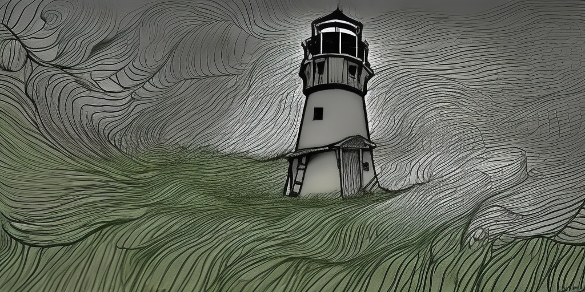

Chapter 2: El Oro de los Ratones
Before the Next Full Moon

Before the Next Full Moon
15051.05.07
觸岸時，已是深夜了。沙灘碼頭上一片漆黑，空無一人，讓瑪琳船長感到疑惑。她帶領著大家走入市中心。市中心有一處噴水池，左右兩側分別為商店街，轉角處則是瑪琳船長的家。一名穿著教會服裝的男子正在瑪琳船長家等她，表情看起來十分焦急。經過了解，島上失蹤的事件越發嚴重，甚至出現了原因不明的中毒事件。
冒險者們先到瑪琳船長家三樓的客房休息，準備隔日出發，協助解決島上的事件。
15051.05.08
一早，根據瑪琳船長的說明，島上有個「聖徒雕像」（勇者雕像），在燈塔附近，是當地的觀光勝地。冒險者們朝著這個景點的方向走去。途中他們也逛了逛紀念品店，Beau 購買了完整一套的勇者公仔紀念品，包含聖 Rayami、轟雷牧師、The Watcher、焰狼、火龍捲，以及 Inferno，大家也從店員口中打聽到了一名住在燈塔旁，脾氣古怪的獨居老人 Ronfello，不過據說他喜歡喝海鮮湯，因此冒險者們決定先去附近的酒館「黃金之傲」買海鮮湯，再去拜訪他。
來到了 Ronfello 的小屋，幾番溝通加上海鮮湯，Ronfello 才讓大家走進他的小屋。Ronfello 表示自己是前陣子中毒的，中毒後臉色發黑，走路不穩，而且容易累。他也表示自己以前是礦工，但在島嶼西邊的金海岸礦坑坍塌後，他是唯一倖存的人。礦坑也在坍塌後封鎖起來了。
冒險者們決定往金海岸礦坑前進，卻在離開時遇見了匆匆跑來的 Liliana，他表示 Ralf 在礦坑附近的公園失蹤了。
Ronfello 為冒險者們準備了幾個煤油燈和一個裝有金絲雀的鳥籠，讓冒險者可以放心踏入礦坑。
走到金海岸礦坑附近，周圍被木柵欄圍起來，附近地上則有些許鞋印和爪印，木樁上的布料甚至有被刮破的痕跡。
冒險者們隨著 Liliana 一一翻過柵欄，只有 YHWH 留了下來，和附近的遊民 Joseph 談天。
走入礦坑，冒險者小心翼翼地往下探索，發現了一個意識不穩定，倒下的人。經過確認，這人便是狂暴戰士幫的「巫妖剋星」Essis。Essis 表示拉索斯教把人抓來這裡。不過冒險者們還是沒有看見 Ralf 的蹤跡。向另一條走道走去，他們前方看見了其他人形生物的影子，仔細一看，是兩隻老鼠人朝著冒險者的方向跑來，從後方陰影中伸出巨大的黑色爪子抓住了跑在後面的老鼠人，將他拖入陰影之中。
『不……他們殺了臭皮！』
冒險者們試著和驚魂未定的老鼠人搭話，得知他的名字叫鼠田佩特拉，而他的夥伴臭皮被殺死了。地底下時常有一名人類拉索斯教徒和一隻怪物出現，後方伸出長長爪子的就是那隻怪物。那隻怪物有著黑毛、長手臂和尖爪，似乎非常怕火。冒險者們繞過轉角，看見在牆邊有個冒出紅光的標記，怪物和教徒正好在那。看見冒險者們，怪物便按向標記，傳送走了，留下教徒。不過 Midori 定睛一看，那人竟然是他苦苦追尋的 Yuki。這讓 Midori 陷入了極度複雜的情緒。
隨著 Yuki 跑走，其他冒險者們趕緊去研究標記，發現它應該是個傳送陣。而為了增幅傳送的能量，通常會使用寶石進行增幅，但冒險者們並未看見附近藏有寶石。然而，與一般的傳送陣比較，這個傳送陣使用的似乎是巫妖的法術，在吸收寶石能量後，會讓周遭的人中毒，而這也很有可能是島上大量中毒事件發生的主因。
冒險者們繼續在地下探索，看見了鼠田的另一名夥伴，髒牙，也找到了 Ralf。同時，他們聽見了怪物的低鳴聲。一場戰鬥一觸即發。
方努爾市，Ron 在一座津菈教堂醒來。他的巫妖手臂似乎被捆綁上了一條金屬鍊子。一名修女看見他醒來，趕緊喚來神父。根據神父的說明，這些鍊子只能暫時抵擋巫妖的力量，建議 Ron 去找一名被稱為「巨鎚」的 Reese。
在瑪麗修女的陪伴下，兩人漫步在方努爾市的街道。閒聊之中，Ron 得知瑪麗修女似乎和 Midori 一起在名為 Nimu 的孤兒院長大，小時候的 Midori 也是蠻調皮的。
見到了傳說中的巨鎚 Reese，Reese 帶著瑪麗修女和 Ron 前往 Nimu 孤兒院附近的一座水井。他們在深處看見兩名拉索斯教徒，圍著一個魔法陣，正在吟唱。而魔法陣的中央，堆放著神秘的黑色石頭，隱隱散發著毒素。在 Ron 和 Reese 的攻擊下，兩名教徒很快就被擊倒了。Reese 也給了 Ron 一張他的調查紀錄，最上方寫著 Reese Tig’s Study（瑞斯提克的研究）。
YHWH 在其他冒險者進入洞穴一陣子後，聽到了 Domneil 的聲音，告訴他礦坑的底部有好東西。於是 YHWH 和 Joseph 便也翻過柵欄，走入礦坑內。YHWH 在礦坑底部看見了大量的炸藥，便用他的百寶袋盡可能的把所有炸藥裝進去。他們倆也爬到了地底，與其他冒險者們交談後，便爬回地面，帶著炸藥走回礦坑入口待命。
冒險者們與怪物戰鬥的同時，發現它似乎和拉茲特獸有些相似，甚至可以說是變異的拉茲特獸，不僅外觀十分特化，活動的速度也明顯比過去看過的快上非常多。
激戰的過程中，冒險者對怪物的傷害似乎微不足道，直到在 YHWH 的協助下引爆了部分的炸藥，怪物才有較為明顯的損傷，但同時 Beau 也陷入了昏迷。
經過了隊友們的搶救與奮戰，冒險者們終於將怪物擊倒，除了 Joseph 和髒牙外並沒有人死亡。戰鬥結束後，Essis 和 Siri 來到傳送陣調查。Essis 將他的劍，異教徒剋星，插入傳送陣的圖型，並扭轉了一下，竟然掉出了一些寶石，以及一張紙條，然而紙條上寫的似乎是拉索斯語，兩人看不懂。Siri 先將寶石收了起來，計畫帶去給懂礦石的山田看。
Siri 也將紙條遞給了看得懂拉索斯語的 Beau 閱讀，Beau 解讀出上面寫的內容，是 Yuki 寫給川納唐普爵士的信，寫著關於一些實驗，以及預計進行的儀式。信的內容足以表明 Yuki 和 Midori 已站在不同的立場，因此為了保護 Midori，Beau 請他先暫時離開洞穴後，才和其他人分享信件的內容。而內容中特別提到預計會在下次月圓之日進行儀式，下次的月圓是 5/14，已經不到一星期了。
冒險者們趕緊離開礦坑，先回到瑪琳船長家去，預計接下來可先回狂暴戰士幫回報消息，或接受瑪琳船長的指令，去方努爾市的聖津菈大教堂找 Robinson 主教。瑪琳船長希望冒險者們可以將島上的調查報告轉交給主教，同時也遞給大家一個勳章，可以證明他們是津菈教的協助者，路程上會方便很多。同時，山田也表示自己有任務在身，會跟著大家一同前往方努爾市。
休息時，Beau 和 Midori 詢問了關於 Yuki 的事，得知他們倆從小在名為 Nimu，由軍營改建而成的孤兒院長大，有一年冬天，他們計劃從孤兒院逃走，卻被其中一名同伴，狐狸人瑪莉背叛，而失敗了，不久後，Yuki 便被帶走了。另 Beau 感到意外的是，Yuki 似乎從來沒有信奉過津菈教，Midori 也坦承自己其實並不是很虔誠的信徒。Beau 也藉機詢問了「St. Natasha」這個他在 Yuki 所寫的信中看見過的地名（Yuki 在信中表示這個地方是他們將舉行儀式的地方）。依照 Midori 的了解，這個地方似乎就是個偏僻的小漁村罷了，沒什麼特別的。
晚餐時間，冒險者們和瑪琳船長等人共進晚餐。冒險者們向瑪琳船長詢問了不少問題，得知目前推斷島上的惡意事件應為住在金海岸礦坑的拉索斯教徒們幹的。他們也得知津菈教可分為本格派以及南方少數的因諾派。十多年前的津菈教內戰中，因諾派的領導者川納唐普爵士落敗，被剝奪他的爵位，流放至 St. Natasha，而 St. Natasha 也被去除了聖字，改為單純的 Natasha，也就是爵士妻子的名字。年輕時的他並不熱愛宗教，據傳是因為他的妻子，他才成為了宗教狂熱者。馬林船長也不排除川納唐普爵士與拉索斯教合作的可能性。
Essis 將先前 Beau 交還給他的劍，異教徒剋星，再次交給 Beau，預祝冒險者們接下來的路途順利，並表示他可以回到狂暴戰士幫回報消息。
Siri 私下和山田詢問了他們在礦坑找到的寶石，在山田的鑑定下，他判斷這些黑色的寶石是「拉巴比石」，在特定的角度下可以看見折射出彩虹色的光線。而其中一顆，甚至是極為稀有的「大河之心」。這些石頭，依照山田的解釋，可以拿來增幅特定類型的法術，包含死靈學派的法術以及傳送術。山田 表示他來這裡的目的之一便是確認大河之心的下落，但他並沒有要帶走的意思，讓 Siri 可以自行決定怎麼處理，不過他建議可以交給津菈教處理。Siri 將其中一顆交給山田，其他則在和冒險者們討論後先交給瑪琳船長保管，只帶其中一顆去見 Robinson 主教。
準備好後，冒險者們和山田一同前往瑪琳船長私有的船隻，準備前往方努爾市。
夜深，大家入眠後，Siri 彷彿聽見了水滲入船艙的聲音。不久後，他在一處沙灘上醒來，身邊卻不見其他夥伴的身影，只有一個藍髮的小女孩看著他。「你的符號是什麼？」小女孩問他。他說這個地方叫 Traum。
小女孩領著搞不清楚狀況的 Siri 來到一座涼亭，有一名身穿白袍的削瘦男子，男子請 Siri 看向涼亭旁的一口井。Sirid 看向井內，井內有八個符號不斷閃過，但 Siri 仍然不知道哪個是他的符號。Siri 再次看向井中，這次井中的景象有了變化，他看見一名綠色頭髮的小女孩在一片廢墟中穿梭，焦急地尋找著什麼。
「我們暫時叫你 A8990F 吧。」男子如此說道，然後將 Siri 的頭壓入水中。
Siri 驚醒，在船艙中的他手中緊握著一張紙，上面有個謎題。謎題似乎和 Siri 的過去有關。
Ron、瑪莉和瑞斯在地底下和怪物戰鬥，怪物驚人的戰鬥力將看似身經百戰的瑞斯的頭咬斷了，瑪莉也陷入了昏迷，在經過了長時間的戰鬥後 Ron 發現他被封印的巫妖手臂自行動了起來對準了怪物的方向，似乎吸收了什麼東西。怪物被擊倒後化身成了一名衣著破爛的小孩子的屍體。Ron 也發現自己在吸收了這隻怪獸的能量後，手上用來封印巫妖之手的鏈子似乎生鏽了。
Ron 背著昏迷的瑪莉，嘗試找到出口。他聽見上方似乎有人在說話，依稀聽見 Nimu 和津菈的字眼。推開木板，他看見一名神父、一名修女和四個小孩子。神父向他說明這裡是 Nimu 孤兒院，並讓修女帶他們去休息，他則聽了 Ron 的說明後派人到地底下去將瑞斯的屍體處理。
然而，Ron 對於剛剛看見的景象感到不對勁。死去的怪物變成了疑似孤兒院的小孩，這當中似乎有些什麼問題。出於不放心，他在瑪莉清醒後，將瑪莉一起背到地底下，確認瑞斯的屍體是否還在原處，只見不包含愛茉倫神父的三名神父正將瑞斯和原為怪物的小孩屍體搬到一旁去。Ron 提議要將他們的屍體搬到聖津菈大教堂去，較為安全，經過了 Ron 的解釋後，神父們最終接受了他的提議。